01
办公室部
统筹社团日常行政工作，负责会议记录、物资管理、档案整理、经费登记，协调各部门工作，保障社团各项事务有序运转。
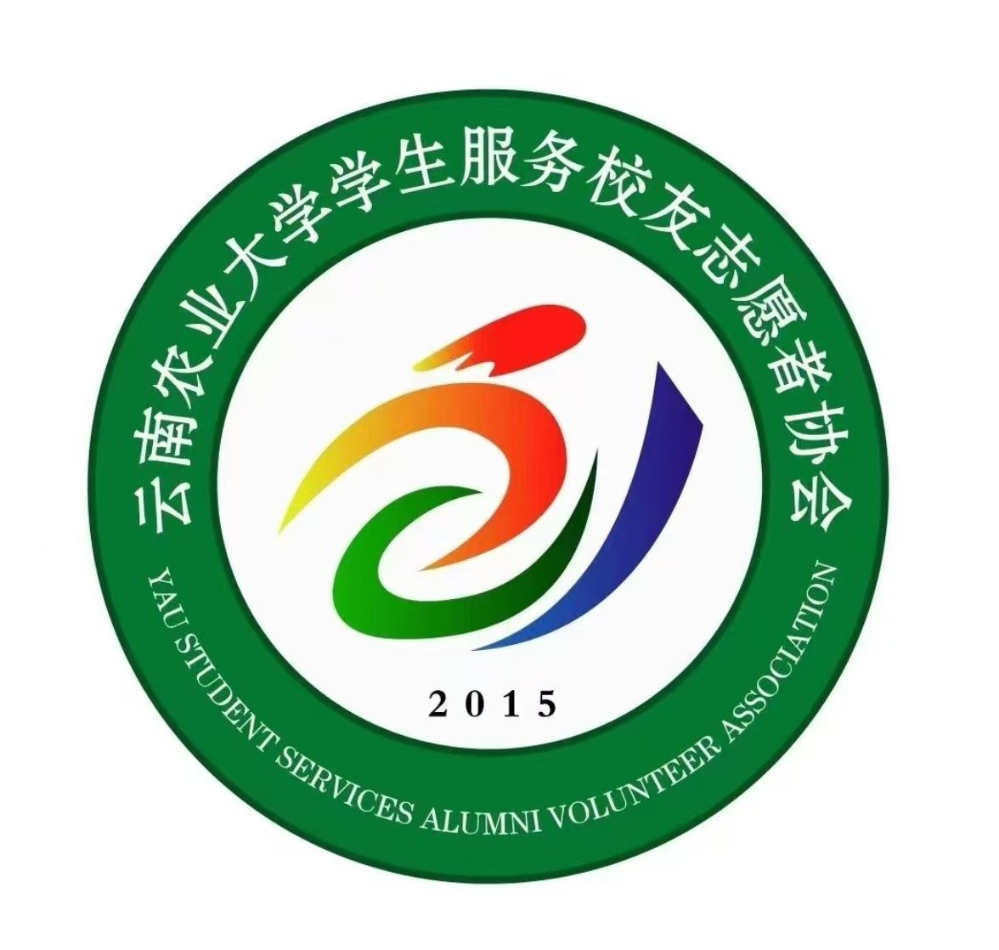
校友志愿者协会
本社团成立于云南农业大学校友工作发展需求之下，以联络校友、服务校友、搭建在校师生与广大校友沟通桥梁为宗旨，汇聚热心志愿服务的在校学子。协会自成立以来，持续配合学校校友办开展各类校友相关工作，现有在校志愿者百余人。
协会长期开展校友返校接待、校友寻访座谈、校友信息整理、校友活动宣传等志愿活动，协助搭建校友交流平台，传递母校温情。近年来，社团围绕校友联络与志愿服务推进品牌建设，形成 “志愿先行、温情联结、校友互通” 的发展特色，引导在校学生感悟农大精神，拓展视野。
未来，协会将持续优化志愿服务体系，丰富校友联动活动，当好母校与校友之间的纽带，凝聚校友力量，助力在校学子成长，为学校校友事业发展贡献青年力量。
统筹社团日常行政工作，负责会议记录、物资管理、档案整理、经费登记，协调各部门工作，保障社团各项事务有序运转。
负责社团品牌宣传，运营新媒体平台，设计海报推文，拍摄活动影像，对外展示社团风貌，扩大社团影响力与知名度。
构思策划各类社团活动，撰写活动方案，规划活动流程，细化执行方案，统筹活动前期创意设计与整体安排。
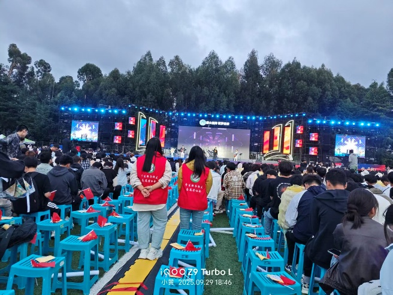
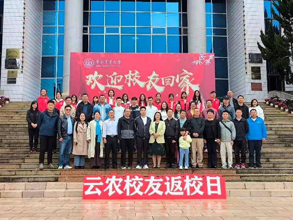
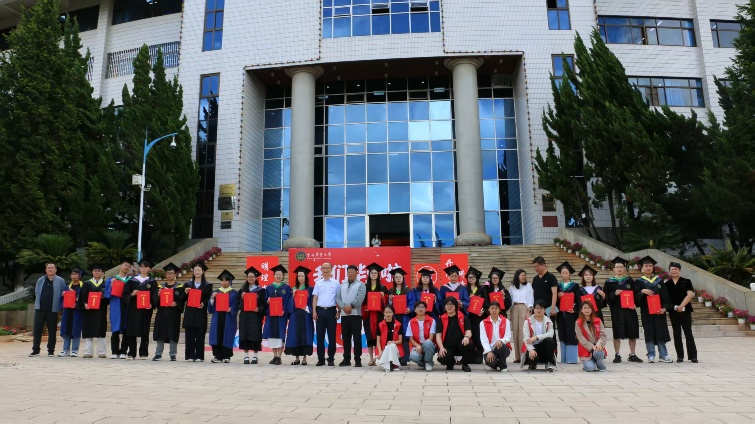
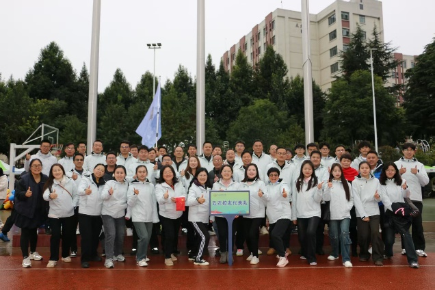

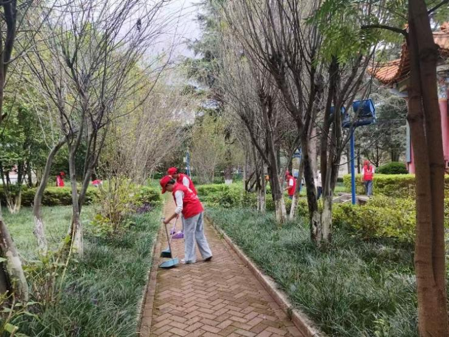
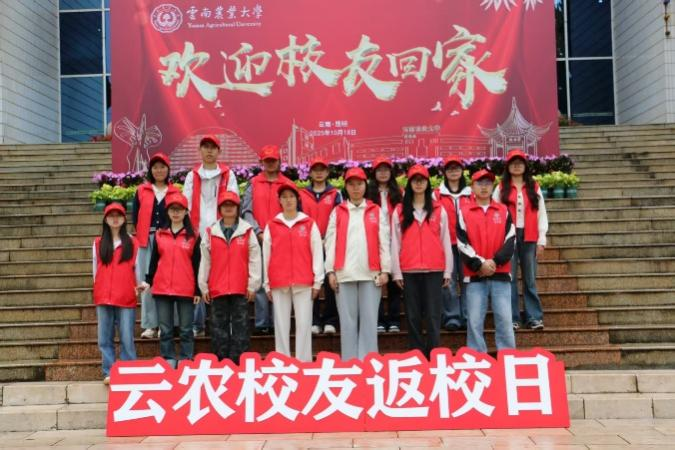
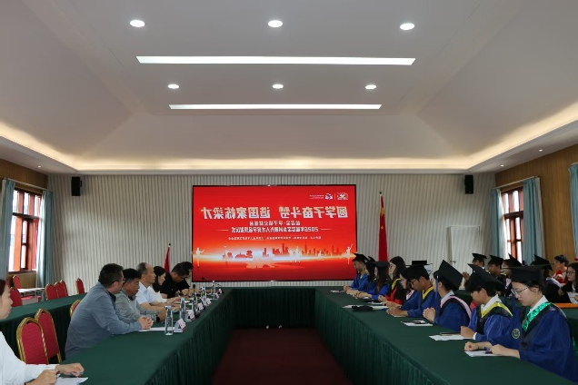

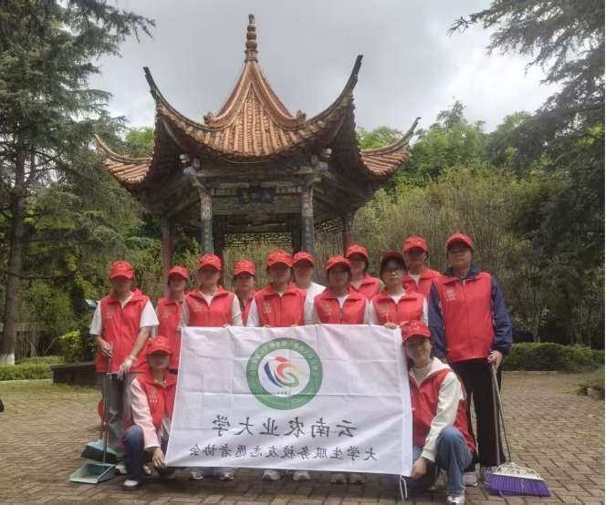
分工协作，捡拾绿化带垃圾、擦拭公共座椅、清理地面纸屑杂物，规整乱停放非机动车，以实际行动维护校园整洁环境。本次活动将志愿服务落到日常校园维护，强化社员爱护校园、躬身实干的志愿意识。

校友返校日志愿活动中，志愿者承担嘉宾签到、会场引导、座谈陪同与校园游览讲解等服务，协助校友重温求学岁月、感受母校发展变化，以温情服务联结校友与母校，传递农大记忆。
查看活动报道 →
校运会校友方队志愿活动中，志愿者负责校友方阵组建、现场引导、方阵协调与后勤保障，助力校友以方队形式重返赛场，展现校友风采与母校凝聚力，让志愿力量护航校友荣光时刻。
查看活动报道 →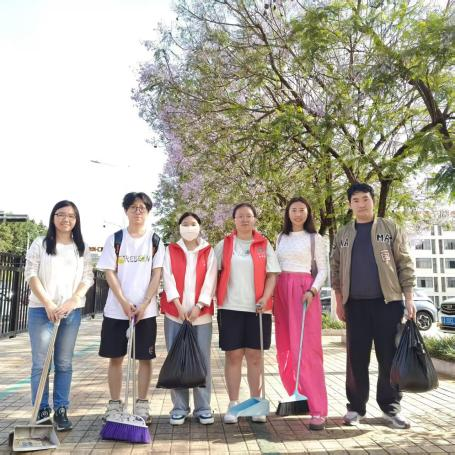
志愿者携带抹布、扫帚、垃圾袋等工具，全面擦拭天桥护栏、清理台阶缝隙垃圾、清扫天桥两侧步道。发挥社团示范作用，引导全校师生自觉爱护校园环境，以微小志愿行动营造整洁文明校园风貌。

志愿者提前布置会场、摆放席卡、准备茶水与颁奖物料；活动现场负责嘉宾签到、会场引导、摄影记录、会议物料传递；座谈会环节协助收集校友乡村发展经验分享材料，会后整理会场、归档活动图文资料。
查看活动报道 →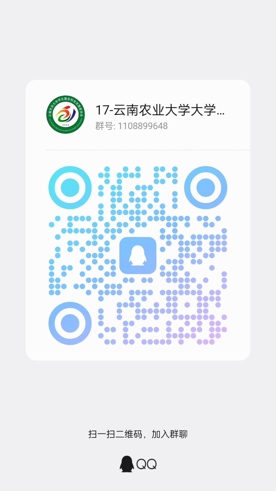